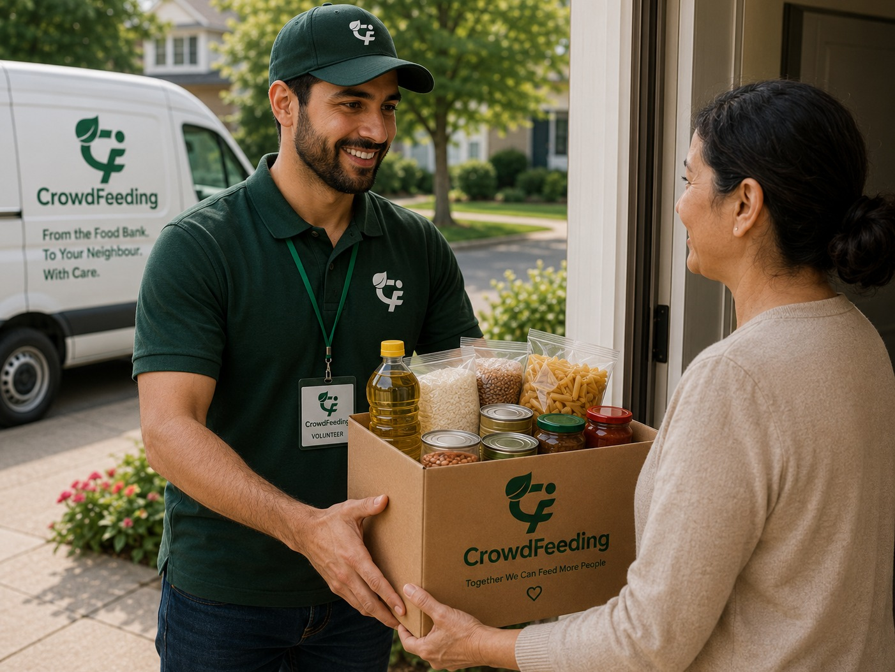
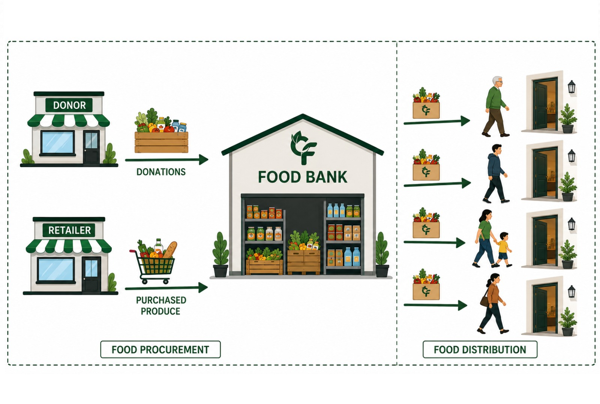
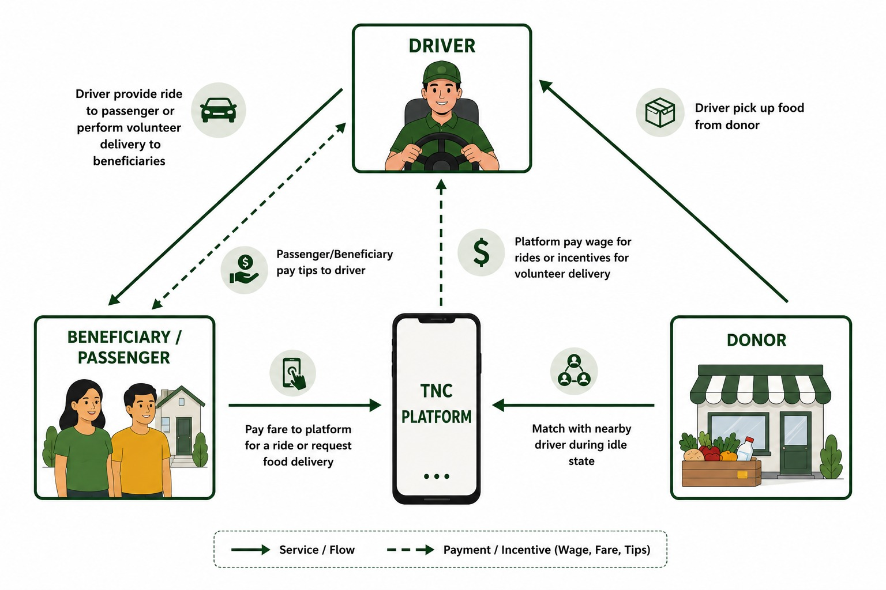
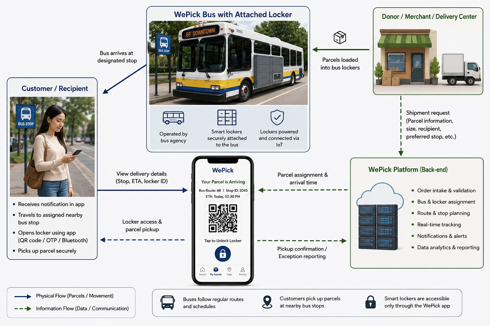
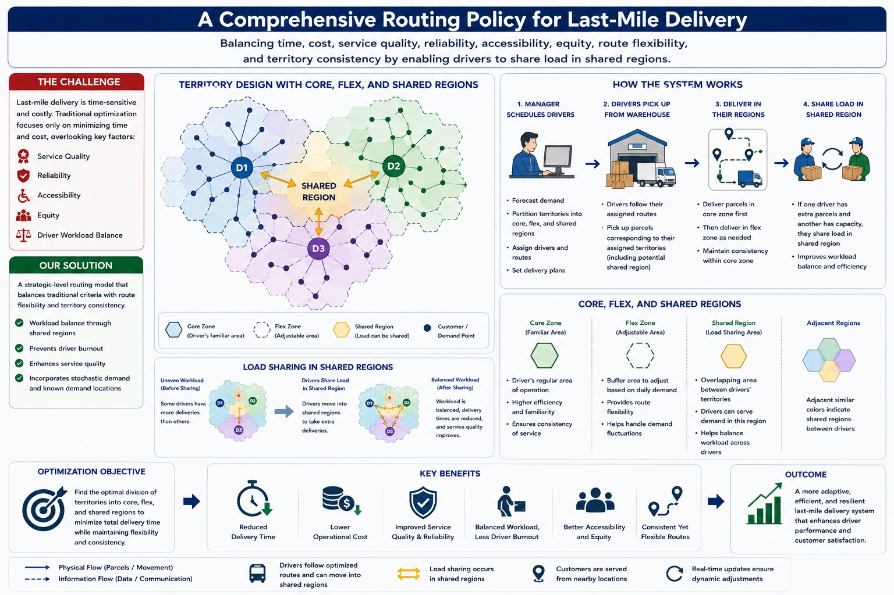
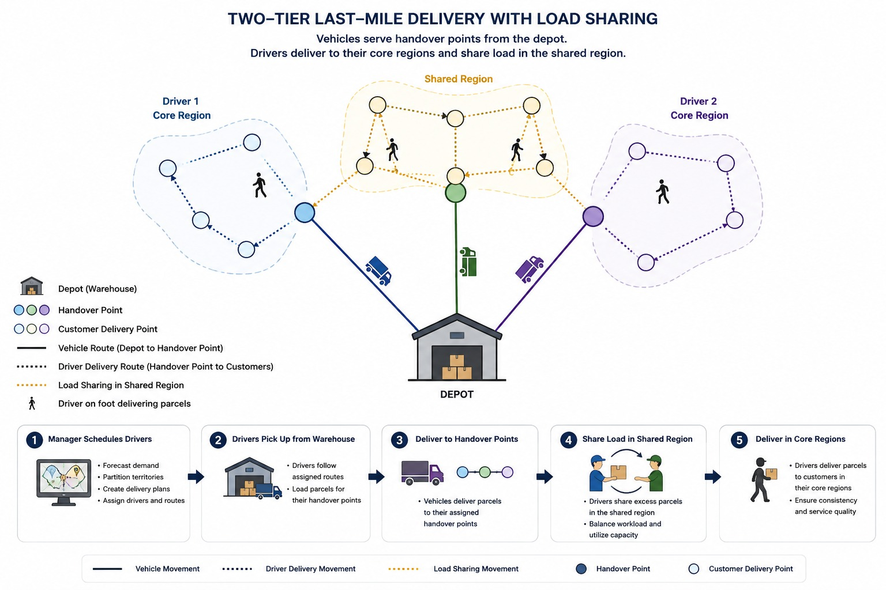

Postdoctoral Researcher | Operations Research | Data Science | Sustainable Supply Chains
I'm Dr. Ahana Malhotra, a Postdoctoral Researcher at McMaster University specializing in Operations Research, Data Analytics,
and Sustainable Supply Chain Management. My work focuses on designing data-driven solutions that improve decision-making in humanitarian
logistics, food rescue systems, and equitable last-mile delivery.
With a multidisciplinary background spanning academia and industry, I combine optimization, machine learning, statistical modeling,
and business analytics to solve complex operational challenges. My research has led to the development of innovative
decision-support systems, including the commercialization of a food rescue platform that bridges research with real-world
community impact.
Beyond research, I have published in leading journals, presented my work at international conferences, secured competitive
scholarships and awards, collaborated with global researchers and industry partners, and mentored students and multidisciplinary
teams. My expertise spans Python, SQL, R, mathematical optimization (Gurobi & CPLEX), cloud technologies, and advanced analytics,
enabling me to transform complex data into actionable insights that drive efficiency, sustainability, and meaningful social impact.
Skills
Experience
Education
Translated academic research into real-world impact by leading the development of a food rescue mobile application and web platform. Bridged operations research, data analytics, and technology to support equitable food distribution and strengthen community partnerships.
Learn moreDesigned advanced mathematical optimization and AI-driven decision-support models to solve complex challenges in sustainable supply chains, humanitarian logistics, crowdshipping, and equitable last-mile delivery. Leveraged operations research, machine learning, and analytics to improve efficiency, accessibility, and data-driven decision making.
Learn moreCollaborated with 10 organizations and 18 international researchers to develop innovative solutions for sustainable supply chains and humanitarian logistics. Fostered interdisciplinary partnerships that bridged academia, industry, nonprofits, and community stakeholders to drive impactful research and practical implementation.
Learn moreLed and mentored a multidisciplinary team of 11 students, fostering innovation in research, software development, and community-focused projects. Supervised undergraduate and graduate students, taught Operations Management, and empowered future professionals through collaborative learning and research excellence.
Published peer-reviewed research and presented at internationally recognized conferences, including INFORMS, CORS, University of Toronto, and Michigan State University. Contributed to advancing knowledge in Operations Research, Sustainable Supply Chains, and Humanitarian Logistics through high-impact research and scholarly collaboration.
Awarded $168,000+ in competitive scholarships and fellowships, including a $130,000 PhD Scholarship from McMaster University and a $38,000 MBA Scholarship from Mississippi State University. Recognized for academic excellence, innovation, and research leadership through prestigious awards and competitive programs.

Integrated mathematical modeling and logistics optimization to improve last-mile food accessibility while minimizing operational costs and food waste. Under-review at POMS.

Developed unified framework for procurement and equitable distribution in food bank operations.
Technologies- Python • Stochastic Optimization • Dynamic Programming • MILP

Three sided market approach to integrate volunteer deliveries with the passenger rides. Submitted to IJPE
Technologies - Python • market equilibrium model

Developed optimization models for parcel locker sharing to improve accessibility, efficiency, and equity in urban logistics. Research published in the Journal of Transport Geography.
Technologies - Operations Research • Optimization • GIS • Data Analytics

Introduce comprehensive routing policy to enhance driver performance and customer satisfaction.

Integrating equity in on-foot deliveries by load sharing and enhancing their performance.
Published in the Journal of Transport Geography. Ongoing research includes manuscripts under review at Production and Operations Management (POMS) and the International Journal of Production Economics (IJPE).
Leading multiple research projects currently under review, focusing on food rescue logistics, equitable supply chain optimization, volunteer delivery systems, and humanitarian operations.
Presented research at leading international conferences including INFORMS, CORS, University of Toronto, Michigan State University, and other global research forums.
Operations Research • Sustainable Supply Chains • Humanitarian Logistics • Last-Mile Delivery • Food Rescue Systems • Data Analytics • Mathematical Optimization
Copyright @ Dr.Ahana Malhotra. Made with by Visual Studio